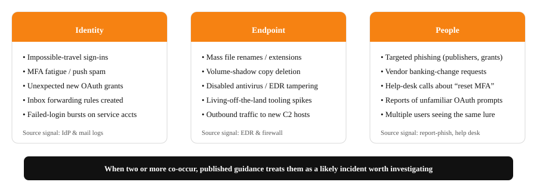

Prevention
An educational summary of how published guidance suggests campuses can reduce attack surface, raise the cost of intrusion, and detect intrusions earlier. Most successful response begins with good prevention.
Educational summary of public guidance
The recommendations on this page paraphrase publicly available guidance from sources such as CISA #StopRansomware, NIST SP 800-61r3, and EDUCAUSE. They are not professional advice and not a substitute for your institution’s plan, contracts, insurance terms, or applicable law.
Prepare
Reduce attack surface, raise the cost of a successful intrusion, and rehearse the response.
- Enforce MFA — phishing-resistant where you can.
- Maintain immutable, tested backups for tier-1 systems.
- Segment networks and harden remote access.
- Patch on a defined cadence; track third-party SaaS exposure.
- Run regular phishing simulations and security training.
- Hold annual tabletop exercises across roles.
Detect
Catch ransomware activity early — before encryption, ideally during initial access.
- Deploy EDR on all endpoints with tuned alerting.
- Centralize identity provider logs and hunt continuously.
- Monitor for impossible travel, MFA fatigue, OAuth grants, and rogue mailbox rules.
- Empower users to report suspicious activity in one click and reward reports.
- Watch for early indicators: mass file renames, shadow-copy deletion, unexpected admin tool use.
Early-warning signals to watch

Most ransomware intrusions show identity, endpoint, and human-reported signals before encryption begins. Watch for combinations rather than single events.
Top prevention controls for higher ed
- Phishing-resistant MFA on privileged accounts; MFA campus-wide. Per CISA, only FIDO/WebAuthn and PKI reliably resist phishing.
- Immutable, tested backups for tier-1 systems, restored end-to-end at least quarterly.
- Network segmentation separating research, administrative, student, and IoT/lab environments.
- Hardened remote access: disable internet-exposed RDP; place VPNs behind MFA and conditional access.
- Asset and SaaS inventory with monitored exposure to high-impact CVEs — recent higher-ed breaches have been driven heavily by exploited third-party software.
- EDR everywhere with documented response playbooks.
- Continuous identity hunting: impossible travel, MFA fatigue, OAuth grants, mailbox rules.
- Phishing simulations and short, frequent training; reward reporting.
- Annual tabletop exercises across IT, leadership, communications, and legal.
Find your role’s prevention steps
Student
Before-incident checklist for this role.
Faculty (incl. adjuncts and researchers)
Before-incident checklist for this role.
Staff and department personnel
Before-incident checklist for this role.
IT and Security teams
Before-incident checklist for this role.
Senior leadership and administrators
Before-incident checklist for this role.
Communications, public affairs, and legal
Before-incident checklist for this role.